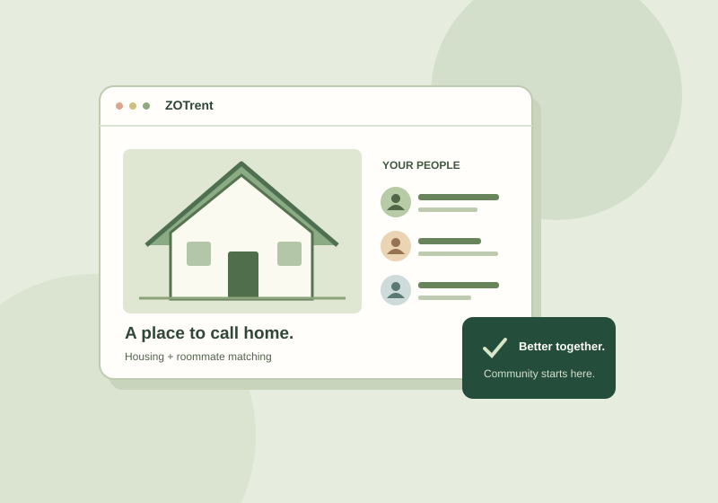

01 Housing & community
ZOTrent
Finding a place. Finding your people.
A course project exploring rental housing and roommate matching for UCI students, with particular attention to the challenges international students face.
Explore the ZOTrent project brief
The context
Finding housing also means making decisions about location, cost, and who to live with. International students may be navigating an unfamiliar rental process.
The concept
Bring rental listings and roommate matching into a student-focused experience, with UCI email registration as part of the concept.
A design question
How can an interface help students compare both a place to live and the people they might share it with?